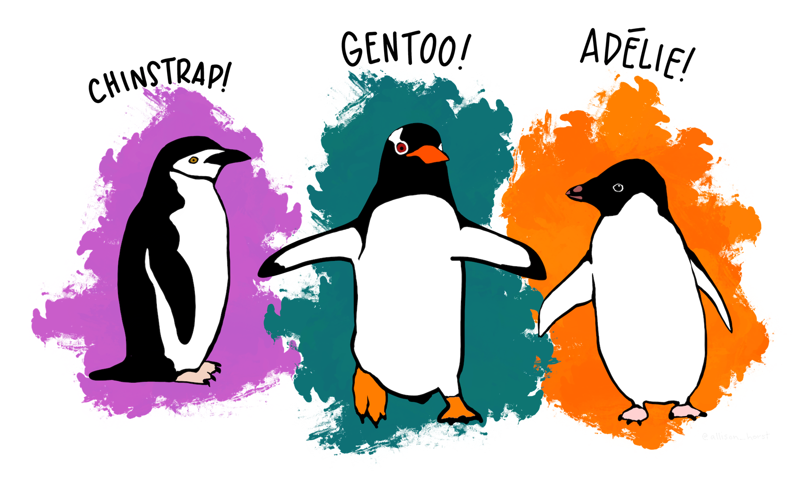
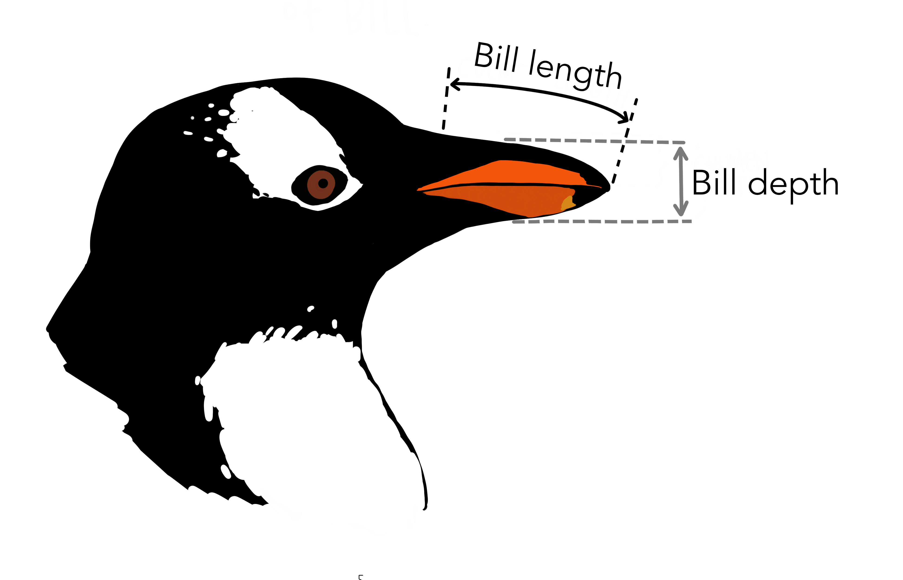
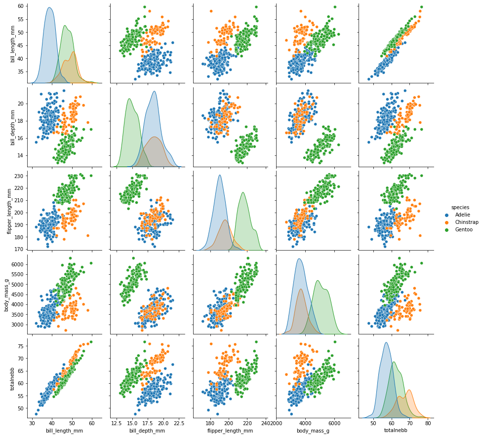
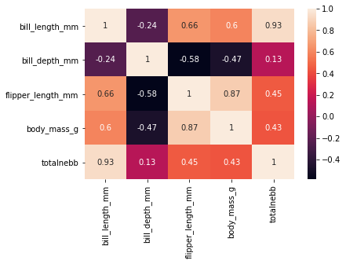

Maskinlæring (med pingviner)¶
Vi skal lage en maskinlæringsmodell for å artsbestemme ringpingviner, bøylepingviner og adeliepingviner.
{kind=link}

{kind=link}

Datahåndtering med Pandas¶
import pandas as pd
import seaborn as sns
pingviner = pd.read_csv("datafiler/pengwings.txt")
pingviner.head()
| species | island | bill_length_mm | bill_depth_mm | flipper_length_mm | body_mass_g | sex | |
|---|---|---|---|---|---|---|---|
| 0 | Adelie | Torgersen | 39.1 | 18.7 | 181.0 | 3750.0 | MALE |
| 1 | Adelie | Torgersen | 39.5 | 17.4 | 186.0 | 3800.0 | FEMALE |
| 2 | Adelie | Torgersen | 40.3 | 18.0 | 195.0 | 3250.0 | FEMALE |
| 3 | Adelie | Torgersen | NaN | NaN | NaN | NaN | NaN |
| 4 | Adelie | Torgersen | 36.7 | 19.3 | 193.0 | 3450.0 | FEMALE |
pingviner.tail()
| species | island | bill_length_mm | bill_depth_mm | flipper_length_mm | body_mass_g | sex | |
|---|---|---|---|---|---|---|---|
| 339 | Gentoo | Biscoe | NaN | NaN | NaN | NaN | NaN |
| 340 | Gentoo | Biscoe | 46.8 | 14.3 | 215.0 | 4850.0 | FEMALE |
| 341 | Gentoo | Biscoe | 50.4 | 15.7 | 222.0 | 5750.0 | MALE |
| 342 | Gentoo | Biscoe | 45.2 | 14.8 | 212.0 | 5200.0 | FEMALE |
| 343 | Gentoo | Biscoe | 49.9 | 16.1 | 213.0 | 5400.0 | MALE |
pingviner.info()
<class 'pandas.core.frame.DataFrame'>
RangeIndex: 344 entries, 0 to 343
Data columns (total 7 columns):
# Column Non-Null Count Dtype
--- ------ -------------- -----
0 species 344 non-null object
1 island 344 non-null object
2 bill_length_mm 342 non-null float64
3 bill_depth_mm 342 non-null float64
4 flipper_length_mm 342 non-null float64
5 body_mass_g 342 non-null float64
6 sex 333 non-null object
dtypes: float64(4), object(3)
memory usage: 18.9+ KB
pingviner["totalnebb"] = pingviner["bill_length_mm"] + pingviner["bill_depth_mm"]
pingviner.describe()
| bill_length_mm | bill_depth_mm | flipper_length_mm | body_mass_g | totalnebb | |
|---|---|---|---|---|---|
| count | 342.000000 | 342.000000 | 342.000000 | 342.000000 | 342.000000 |
| mean | 43.921930 | 17.151170 | 200.915205 | 4201.754386 | 61.073099 |
| std | 5.459584 | 1.974793 | 14.061714 | 801.954536 | 5.351485 |
| min | 32.100000 | 13.100000 | 172.000000 | 2700.000000 | 47.600000 |
| 25% | 39.225000 | 15.600000 | 190.000000 | 3550.000000 | 57.300000 |
| 50% | 44.450000 | 17.300000 | 197.000000 | 4050.000000 | 60.350000 |
| 75% | 48.500000 | 18.700000 | 213.000000 | 4750.000000 | 64.575000 |
| max | 59.600000 | 21.500000 | 231.000000 | 6300.000000 | 76.600000 |
sns.pairplot(pingviner, hue = "species")
<seaborn.axisgrid.PairGrid at 0x203dc524fd0>

korrelasjon = pingviner.corr()
sns.heatmap(korrelasjon, annot=True)
<AxesSubplot:>

Maskinlæring¶
from sklearn.model_selection import train_test_split, cross_val_score
from sklearn import tree
from sklearn.metrics import accuracy_score, confusion_matrix
pingviner.dropna(inplace=True)
kriterier = pingviner[["body_mass_g", "bill_length_mm", "bill_depth_mm", "flipper_length_mm"]]
kategorier = pingviner["species"]
testandel = 0.20 # bruker 20 % av datasettet til å teste
ml_data = train_test_split(kriterier, kategorier, test_size=testandel, random_state=42)
treningskriterier = ml_data[0]
testkriterier = ml_data[1]
treningskategorier = ml_data[2]
testkategorier = ml_data[3]
modell = tree.DecisionTreeClassifier()
modell.fit(treningskriterier, treningskategorier)
DecisionTreeClassifier()
forutsigelser = modell.predict(testkriterier)
accuracy_score(testkategorier, forutsigelser)
0.9850746268656716
modell.predict([[2000, 40, 60, 500]])
array(['Adelie'], dtype=object)